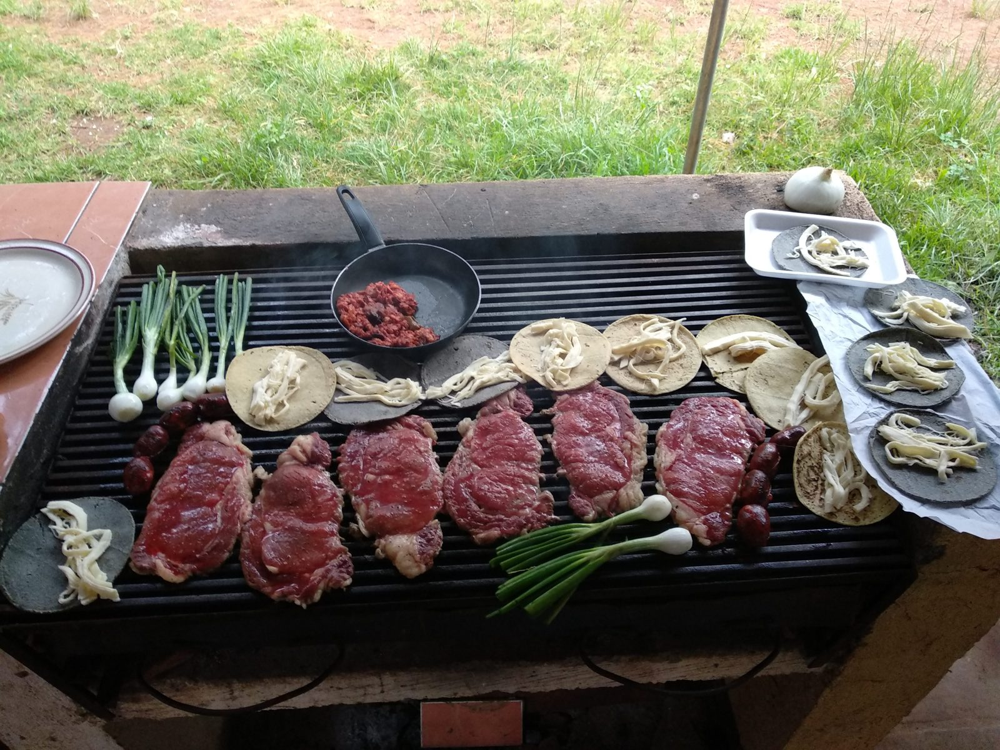

Our story
From engineering to the taco grill
Jonathan's Taqueria was started by an authentic Mexican and lifelong taco lover who discovered his real passion while working as an engineer. Weekends at the grill with family and friends turned into recipes, and recipes turned into a taqueria.
Today we're still a family-owned business. Every order is cooked the way we'd cook it for our own family: fresh, generous, and with tortillas made by hand.
